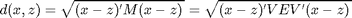
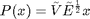
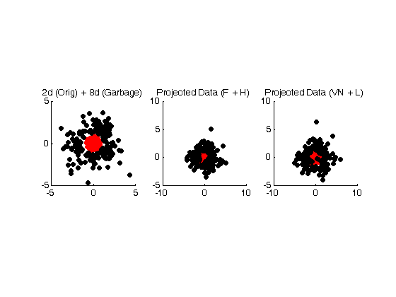
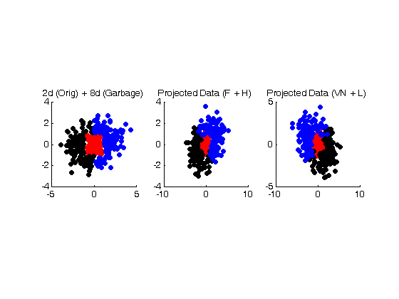

Mirror Descent for Metric Learning (MDML) Demo
Demonstrates how to run MDML (mirror descent for metric learning), which learns a low-dimensional (sparse) Mahalanobis metric, given labeled pairs of points. A pair of points (x, z) is labeled 'similar' (y = 1) or dissimilar (y = -1). Sparsity here is in terms of the eigen- spectrum of the metric matrix, M, which is used to measure the distance betwee two points (x, z) as
$,
i.e., diag(E) is sparse. Projection into this lower-dimensional space can be achieved via .
Contents
A 2-Class Example
In this example, we generate 2-d two-class data with 8 additional garbage (uncorrelated and random) dimensions to illustrate that MDML can learn a low-dimensional (low-rank) representation from the similarity information of the data.
% Generate the training and test data L = 500; % Number of data points K = 3; % Number of nearest neighbors to consider rawData = generate2ClassData(L); % Construct tuples of supervised pairs of data, using K nearest neighbors. % A tuple is (x, z, y), where x and z are two training examples and y = +1 % if the two examples belong to the same class (hence SIMILAR), and y = -1 % if the two examples belong to different classes (hence DISSIMILAR) [Isim, Idis] = generateLabeledPairs(rawData.Xtrn, rawData.ytrn, K); mdmlData.X = rawData.Xtrn; mdmlData.I = [Isim; Idis]; mdmlData.y = [ones(size(Isim, 1), 1); -ones(size(Idis, 1), 1)]; % Randomize the order of data points J = randperm(length(mdmlData.y)); mdmlData.I = mdmlData.I(J, :); mdmlData.y = mdmlData.y(J);
Perform MDML using hinge loss + Frobenius divergence
settings = mdmlSettings('loss', 'hinge',... % Loss function 'breg', 'frobenius',... % Bregman divergence 'eta', 0.25,... % Learning rate 'rho', 0.05,... % Trace-norm regularization 'k', K,... % Num. nearest neighbors 'acc', 1e-6,... % Math. Accuracy/tolerance 'verbose', 0,... % Display-level verbosity 'debug', 0,... % Perform sanity checks 'progbar', 1); % Progress bar mdmlResults = mdml(mdmlData, settings); % Project the data into the new low-dimensional space, whose basis is given % by the two largest eigenvalues. Mhalf = mdmlResults.V(:, [10, 9]) * diag(sqrt(mdmlResults.E([10, 9]))); XptrnFH = rawData.Xtrn * Mhalf; % Compute the kNN error of this approach ypred = kNNClassify(Mhalf, rawData.Xtrn, rawData.ytrn, rawData.Xtst, K); err = 1 - mean(ypred == rawData.ytst); fprintf('Test error on 2D data set (H+F) = %g%%.\n\n', err*100);
Perform MDML using logistic loss + von Neumann divergence
settings.loss = 'logistic'; % Only change loss and breg, keep everything settings.breg = 'vonneumann'; % else the same. mdmlResults = mdml(mdmlData, settings); % Now project the training data and the test data into a new space, % whose basis is given by the two largest eigenvalues. Mhalf = mdmlResults.V(:, [10, 9]) * diag(sqrt(mdmlResults.E([10, 9]))); XptrnVNL = rawData.Xtrn * Mhalf; % Compute the kNN error of this approach ypred = kNNClassify(Mhalf, rawData.Xtrn, rawData.ytrn, rawData.Xtst, K); err = 1 - mean(ypred == rawData.ytst); fprintf('Test error on 2D data set (L+VN) = %g%%.\n\n', err*100); % Plot h = subplot(1, 3, 1); plotDataSet(h, rawData.Xtrn(:, rawData.I), rawData.ytrn, '2d (Orig) + 8d (Garbage)'); h = subplot(1, 3, 2); plotDataSet(h, XptrnFH, rawData.ytrn, 'Projected Data (F + H)'); h = subplot(1, 3, 3); plotDataSet(h, XptrnVNL, rawData.ytrn, 'Projected Data (VN + L)');
Performing metric learning with frobenius + hinge Num pairs of instances seen = 2100, Num updates = 1087. Time = 3.45755 seconds #Zeros in E = 4 / 10 Test error on 2D data set (H+F) = 5.33333%. Performing metric learning with vonneumann + logistic Num pairs of instances seen = 2100, Num updates = 2075. Time = 3.38359 seconds #Zeros in E = 0 / 10 Test error on 2D data set (L+VN) = 12%.
A 3-d Example
In this example, we generate 2-d three-class data with 8 additional garbage (uncorrelated and random) dimensions to illustrate that MDML can learn a low-dimensional (low-rank) representation from the similarity information of the data.
% Generate the training and test data rawData = generate3ClassData(L); % Construct tuples of supervised pairs of data, using K nearest neighbors [Isim, Idis] = generateLabeledPairs(rawData.Xtrn, rawData.ytrn, K); mdmlData.X = rawData.Xtrn; mdmlData.I = [Isim; Idis]; mdmlData.y = [ones(size(Isim, 1), 1); -ones(size(Idis, 1), 1)]; % Randomize the order of data points J = randperm(length(mdmlData.y)); mdmlData.I = mdmlData.I(J, :); mdmlData.y = mdmlData.y(J);
Perform MDML using hinge loss + Frobenius divergence
settings.loss = 'hinge'; settings.breg = 'frobenius'; settings.eta = 0.5; settings.rho = 0.1; mdmlResults = mdml(mdmlData, settings); % Project the data into the new low-dimensional space, whose basis is given % by the two largest eigenvalues. Mhalf = mdmlResults.V(:, [10, 9]) * diag(sqrt(mdmlResults.E([10, 9]))); XptrnFH = rawData.Xtrn * Mhalf; % Compute the kNN error of this approach ypred = kNNClassify(Mhalf, rawData.Xtrn, rawData.ytrn, rawData.Xtst, K); err = 1 - mean(ypred == rawData.ytst); fprintf('Test error on 3D data set (F + H) = %g%%.\n\n', err*100);
Perform MDML using logistic loss + von Neumann divergence
settings.loss = 'logistic'; settings.breg = 'vonneumann'; settings.eta = 0.5; settings.rho = 0.05; mdmlResults = mdml(mdmlData, settings); % Now project the training data and the test data into a new space, % whose basis is given by the two largest eigenvalues. Mhalf = mdmlResults.V(:, [10, 9]) * diag(sqrt(mdmlResults.E([10, 9]))); XptrnVNL = rawData.Xtrn * Mhalf; % Compute the kNN error of this approach ypred = kNNClassify(Mhalf, rawData.Xtrn, rawData.ytrn, rawData.Xtst, K); err = 1 - mean(ypred == rawData.ytst); fprintf('Test error on 3D data set (VN + L) = %g%%.\n\n', err*100); % Plot h = subplot(1, 3, 1); plotDataSet(h, rawData.Xtrn(:, rawData.I), rawData.ytrn, '2d (Orig) + 8d (Garbage)'); h = subplot(1, 3, 2); plotDataSet(h, XptrnFH, rawData.ytrn, 'Projected Data (F + H)'); h = subplot(1, 3, 3); plotDataSet(h, XptrnVNL, rawData.ytrn, 'Projected Data (VN + L)');
Performing metric learning with frobenius + hinge Num pairs of instances seen = 2232, Num updates = 1042. Time = 3.35969 seconds #Zeros in E = 4 / 10 Test error on 3D data set (F + H) = 11.9497%. Performing metric learning with vonneumann + logistic Num pairs of instances seen = 2232, Num updates = 2172. Time = 5.65109 seconds #Zeros in E = 0 / 10 Test error on 3D data set (VN + L) = 16.3522%.